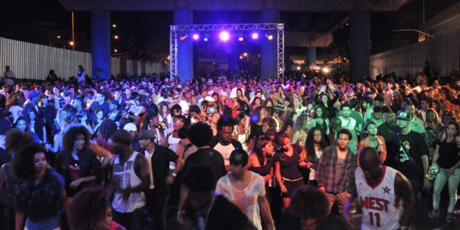

Foto: divulgaçãoBaile Charme de Madureira
28/11/2026 · Casa do Marinheiro, PenhaO charme é um dos pilares da cultura dos bailes da Zona Norte do Rio e tem no Viaduto de Madureira um de seus maiores símbolos. Entre passinhos e R&B, o baile reúne gerações na dança e faz parte da cena black carioca. No app você acompanha as notícias do Baile Charme de Madureira.